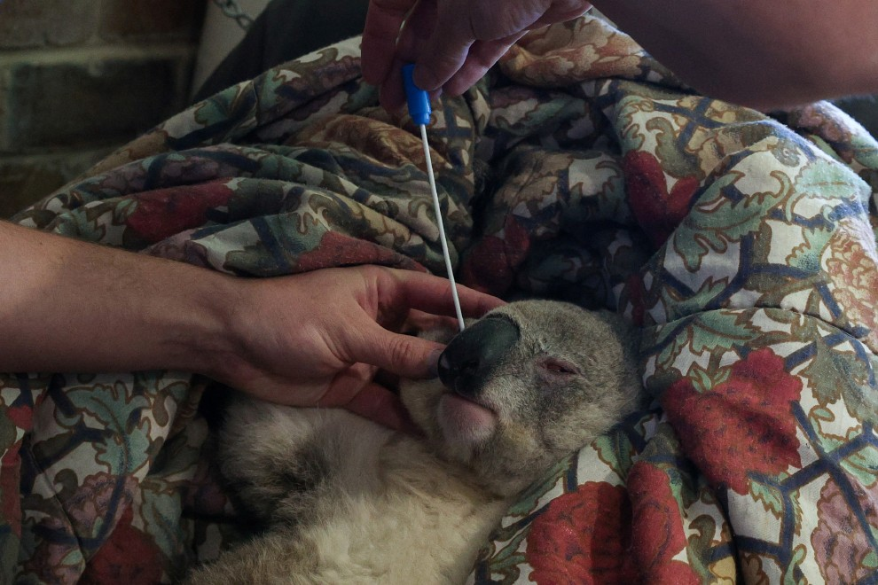
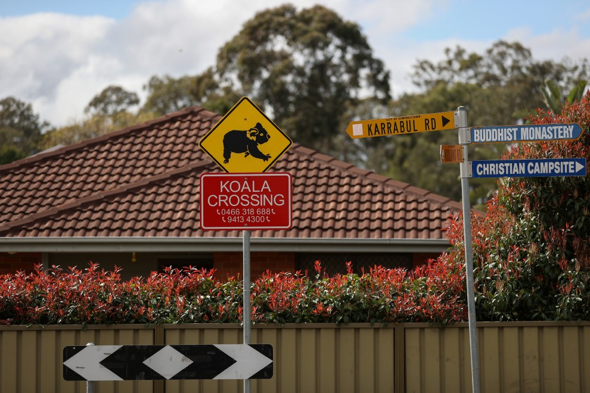

生存危機 (subsistence_crisis)
老化
每天無尾熊都要嚼上萬次才能吃飽，所以到了老年，它們會因為牙齒被磨損得再也無法進食而餓死。

疾病
無尾熊容易感染到數種不同的疾病，常見的兩種像是結膜炎、濕屁股，是種腎臟和泌尿系統的疾病，其他還有呼吸系統的感染、一種頭骨的疾病以及寄生蟲等等。而衣原體細菌常被認為是導致無尾熊生病的主要原因，這種病通過啪啪啪傳播，被感染後會導致不孕、失明甚至死亡。，專家們正持續地在研究它和無尾熊族群們的關係。而可以發現的是無尾熊在人群擁擠或是食物供給量不足的地方生活時，會比較容易感染疾病。

天敵
無尾熊在生活中有幾個天敵，其中之一是澳洲犬(dingoes)，當無尾熊為了要從一棵樹到另一棵而在地上行走時，不論是成年還是小無尾熊，都有可能受到澳洲犬的傷害；而小無尾熊有時則會受到楔尾鵰（wedge-tailed
eagles）及貓頭鷹的攻擊；其他像是野生的貓、狗以及狐狸，也都是無尾熊的天敵之一。但現在無尾熊受到人類道路、交通的影響，使得棲息地的減少，這也可以說是另一種形式的敵人。
人類開墾、氣候變遷
澳洲無尾熊基金會日期提出該國內無尾熊已達「功能性滅絕⚠」的警告。曾經百萬隻的數量已銳減至8萬隻左右，其原因是來自人為的開墾棲息地，以及氣候變遷導致的熱浪死亡。而2019年9月澳洲的森林大火已摧毀超過350萬公頃的林地。作為無尾熊主要棲地的新南威爾斯州當前大火失控的重災區，目前在地的無尾熊族群至少有30%慘遭大火燒死。